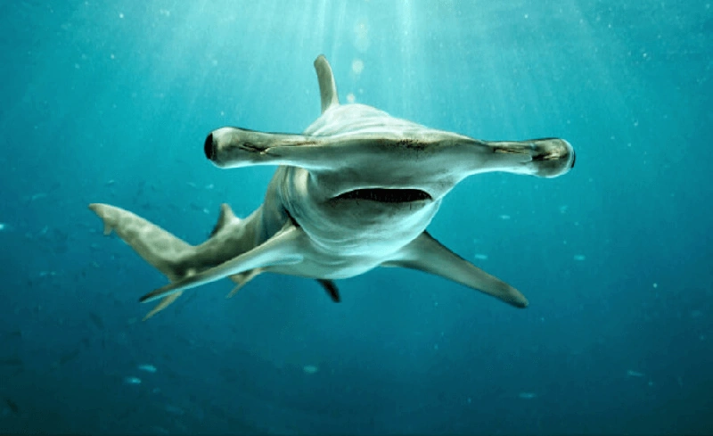
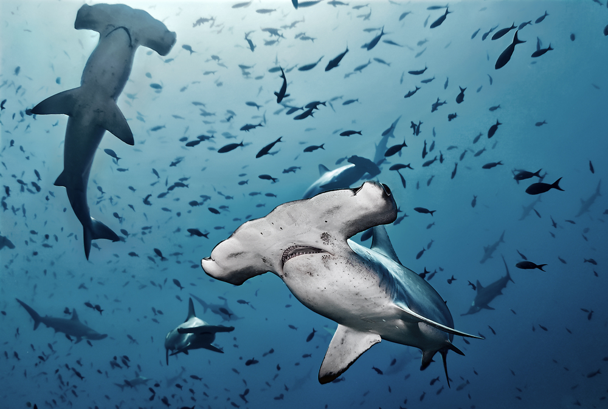

El tiburón martillo gigante (Sphyrna mokarran) es una especie de elasmobranquio carcarriniforme de la familia Sphyrnidae. Posee una longitud media de 4,6 m y una longitud máxima de 6,1 m. Se encuentra en aguas tropicales y templadas cálidas de todo el mundo. Habita zonas costeras y la plataforma continental. El tiburón martillo gigante se puede distinguir de otros tiburones martillo por la forma de su cabeza en forma de martillo (de ahí su nombre), que es ancha con un margen frontal casi recto, y por su primera aleta dorsal alta y en forma de hoz. Es un superdepredador, solitario y nadador, que se alimenta de una amplia variedad de presas que van desde crustáceos y cefalópodos hasta peces óseos y tiburones más pequeños.Las aletas pectorales se localizan detrás de las branquias, y la aleta caudal tienen la punta negra. Casi toda la parte dorsal es gris o café, pero se vuelve blanca cerca de la parte ventral. Al igual que la mayoría de los tiburones, el tiburón martillo presenta contracoloración, es decir, un color oscuro en el lomo y uno claro en el vientre. Visto desde abajo, el tiburón martillo se confunde con el brillo de las aguas de la superficie; visto desde arriba, se confunde con el fondo marino oscuro. La contracoloración es un tipo de camuflaje que permite al tiburón sorprender a sus presas.El tamaño medio de un adulto es de entre 3,7 m y 4 m, aunque el tamaño máximo registrado es 6,1 metros de longitud y casi media tonelada de peso. Los machos al alcanzar la madurez miden entre 2,3 y 2,7 m, y alcanzan al menos los 3,4 m. Las hembras al alcanzar la madurez miden entre 2,5 y 3 m, y llegan a alcanzar entre 4,8 y 5,5 m. Nadie sabe con exactitud por qué estos escualos han evolucionado con esa curiosa forma de cabeza de céfalofolio. Algunos biólogos creen que les proporciona una ventaja sensorial superior para encontrar a sus presas, mientras otros creen que les ayuda en la flotabilidad. Su olfato es capaz, mediante lóbulos olfativos telencefálicos incrementados, de detectar una gota de sangre a una distancia de un kilómetro y medio. Las aletas del tiburón martillo son particularmente apreciadas como alimento en el este de Asia, a pesar de que la caza de aletas de estos y otros tiburones está ahora prohibida en varios países.
El tiburón martillo gigante es un depredador activo con una dieta variada, las presas conocidas del tiburón martillo gigante incluyen invertebrados como cangrejos, langostas, calamares y pulpos; peces óseos tales como sábalos, sardinas, bagres de mar, peces sapo, pargos, roncadores, jureles, corvinas, meros, peces planos y peces cofre; y tiburones más pequeños como las musolas. En el Atolón Rangiroa, los tiburones martillo gigantes se alimentan de manera oportunista de los tiburones grises que se han agotado persiguiendo parejas. Se sabe que la especie es caníbal. En Panamá, se hallaron dientes fósiles pertenecientes a tiburones martillo gigantes que sugieren que el tiburón una vez se aprovechó de los megalodones juveniles, junto con el extinto Hemipristis serra, con el que alguna vez fue contemporáneo.
Los tiburones martillo viven principalmente en zonas costeras tropicales y subtropicales de todo el mundo a lo largo de las costas y plataformas continentales. Generalmente son animales solitarios, pero a diferencia de la mayoría de los tiburones algunas especies de tiburones martillo suelen nadar en cardúmenes durante el día, convirtiéndose en cazadores solitarios por la noche. Es un tiburón tropical semioceánico que habita a lo largo de la costa, en las plataformas continentales, terrazas insulares y pasos y lagunas de atolones de coral, así como en aguas más profundas cerca de tierra; tanto cerca de la superficie como a profundidades de hasta más de 80 m. Habita entre las latitudes 40° N y 35° S. El mar de Cortes se ha considera como un lugar de apareamiento y se le puede encontrar en abundancia. Es una especie migratoria, durante el verano se marcha de Florida y del Mar de China Austral hacia latitudes mayores. Su presencia es generalizada en el sudoeste del océano Índico, pero en Sudáfrica se limita a la costa de KwaZulu-Natal, donde coexiste con el tiburón martillo común (Sphyrna lewini) y el tiburón martillo liso (Sphyrna zygaena). Hay una zona de cría en los manglares costeros del sur de Belice.
Según la Lista Roja de la IUCN se encuentra en peligro de extinción. Esto se debe a que es muy apreciado por sus aletas, sufre de alta mortalidad debido a la captura incidental y solo se reproduce una vez cada dos años, por lo que es vulnerable a la sobreexplotación y agotamiento de la población. Es un animal solitario, por lo que la reproducción es poco frecuente. Debido a que las capturas incidentales de todos los ejemplares del género Sphyrna se catalogan como tiburones martillo, existen muy pocos datos específicos; pero los reportes de dichas capturas casi han desaparecido, por lo que se estima que hubo una disminución en la población de al menos el 80 % desde 1980. Sobre la base de los pocos registros disponibles, se pudo estimar una reducción de la población del 79 % en el océano Índico de 1978 a 2003 y de un 90 % en el Atlántico noroeste y el golfo de México, desde 1986.